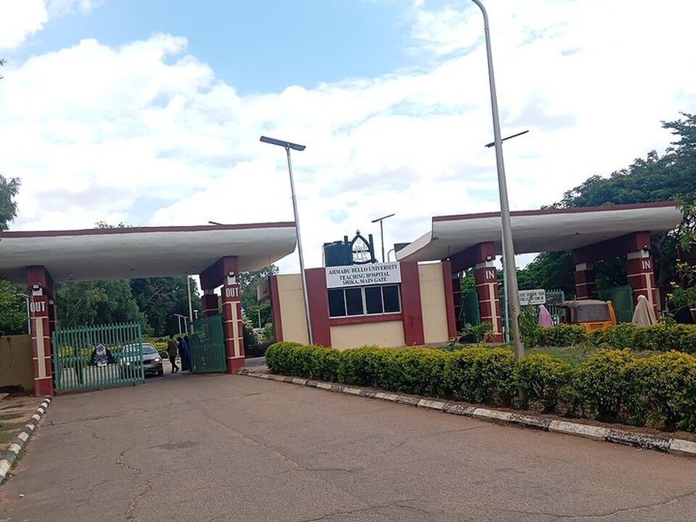

The Renewed Hope Agenda.
The policy framework behind the administration, sector by sector, with each commitment referenced to its page.
Introduction
One agenda, ten areas of work.
The Renewed Hope Agenda is the programme Bola Ahmed Tinubu and Kashim Shettima put to voters as the APC presidential ticket. The ten sections below set out its commitments, and each point is referenced to its page in the published document.
Download the Renewed Hope document (PDF)
Page numbers refer to the Renewed Hope document. Commitments for the 2027 election are on the manifesto page.

Growth that reaches households.
Nigeria's economy was built to export raw materials and import finished goods. The agenda reforms that model, with jobs, industry and shared prosperity at the centre.
- Base the federal budget on the level of spending that optimises growth and jobs, with a clear and mandatory inflationary ceiling on spending (p. 14)
- Develop an industrial master plan with major and minor industrial hubs in each geopolitical zone (p. 22)
- Offer tax credits, tax holidays and reduced-interest loans to businesses that hire a share of young people and give real on-the-job training (p. 22)
- Adjust the revenue allocation so states have greater flexibility to foster grassroots economic development (p. 12)
- Programme: Fiscal, monetary and industrial policy; National Industrial Plan

Roads, rail, housing and credit.
Millions of unemployed Nigerians will be hired to modernise national infrastructure, with a nationwide highway system, a revived rail network and a single, better-capitalised housing agency.
- Build a truly national highway system to make road transport faster, cheaper and safer (p. 14)
- Prioritise completing the Lagos–Kano, Benin–Abakaliki, Port Harcourt–Maiduguri, Lagos–Calabar and Kano–Maradi railway projects (p. 39)
- Encourage state governments to build metro systems in their capital cities that link to the national rail lines (p. 39)
- Merge the federal housing agencies into one body that grants low-interest mortgages, guarantees bank mortgages and buys mortgages from banks (p. 24)
- Programme: National Infrastructure Campaign; transportation policy; housing policy
Learning that leads to work.
Education is a natural and constitutional right. Reform rests on three objectives: qualified educators, safe learning environments and better outcomes.
- Introduce accreditation requirements and standardised training and examinations for teachers in federally funded schools (p. 42)
- Manage federally funded primary and secondary schools through Boards of Education that reserve seats and decision-making power for local community members (p. 43)
- Reform technical and vocational institutions, with centres of excellence in information technology, software development, artificial intelligence and robotics (p. 43)
- Reintroduce Nigerian history to classrooms and make indigenous language courses compulsory through secondary school (p. 42)
- Programme: Teacher training, school management and technical education reforms


Care closer to home.
Basic healthcare is a fundamental human right and a matter of long-term national security, with primary healthcare as its bedrock.
- Scale up the National Health Insurance Authority Act, with mandatory health insurance covering at least 40% of the population within two years (p. 47)
- Build a network of static and mobile clinics so that no person lives more than 3km or a 30-minute walk from a primary facility (p. 46)
- Upgrade, equip and staff a general hospital in every local government area, working with state and local governments (p. 46)
- Encourage grassroots, gender-sensitive and affordable preventative care such as vaccinations, cancer screening and blood pressure and diabetes testing (p. 46)
- Programme: National primary healthcare network; National Health Insurance Authority Act
From farm to market.
The revival of farming continues, with a target to raise cultivated arable land from 35% to 65% in four years and to grow more than the nation needs.
- Increase the share of arable land under cultivation from 35% to 65% in four years (p. 26)
- Introduce commodity boards that set minimum prices for strategic crops such as cocoa, cashew, cassava, yam and groundnut (p. 27)
- Modernise agricultural production and enhance strategic grain reserves to keep staple prices stable (p. 27)
- Run the Irrigate Nigeria Project as a public-private partnership for small-scale irrigation and water catchment (p. 28)
- Programme: Commodity boards; strategic grain reserves; Irrigate Nigeria Project
Safe communities.
National security is the bedrock of a prosperous and democratic society, pursued through a proactive, intelligence-driven approach.
- Recruit, train and better equip additional military, police, paramilitary and intelligence personnel (p. 6)
- Create highly trained anti-terrorist battalions (ABATTS) with special forces units (p. 7)
- Adopt a Critical Infrastructure Protection (CIP) Plan using aerial surveillance and technology against attacks on pipelines, power stations and other vital installations (p. 8)
- Revitalise the Ranger or Forest Guard force so violent groups cannot use forests as hideouts, and strengthen border patrols (p. 9)
- Programme: Anti-terrorist battalions; Critical Infrastructure Protection (CIP) Plan

Reliable, affordable power.
Nigeria has about 12,000MW of installed capacity, generates around 8,000MW and can distribute no more than 4,500MW. The first task is to move more of the power already generated to homes and businesses.
- Take immediate steps to transmit and distribute more of the power already generated (p. 30)
- Base the renewable energy plan on the commitment to carbon neutrality by 2060, with mini-grids and residential solar encouraged (p. 31)
- Raise crude oil production to 2.6mmbpd by 2027 and 4mmbpd by 2030, with a unit to protect pipelines against theft and vandalism (p. 35)
- Complete critical gas infrastructure by 2027, including the OB3, Trans Nigeria and AKK pipelines (p. 36)
- Programme: Presidential Power Initiative; Renewable Energy Plan; Nigeria Gas Master Plan
Opportunity for a young country.
About 130 million Nigerians are aged 15 to 35. The agenda commits to a structured policy of social, economic and political empowerment for them.
- Work with the CBN so banks direct low-cost loans to a quota of youth-led enterprises (p. 58)
- Build business mentorship with 2 million volunteer entrepreneurs and professionals (p. 58)
- Inaugurate a Youth Advisory Council to the Employment Action Plan (p. 58)
- Reform the NYSC into a job-matching programme that lets more corps members work in the private sector (p. 58)
- Programme: Employment Action Plan; Youth Advisory Council; NYSC reform
Future priorities
Beyond these areas, the agenda sets out positions on the digital economy, culture, justice, federalism and foreign policy.
- Digital economy: take full advantage of the Fourth Industrial Revolution, with ICT mastery described as non-negotiable (p. 49)
- Creative and cultural industries: back Nollywood, Kannywood and Afrobeat as fast-growing sources of jobs (p. 53)
- Judicial reform: four pillars, beginning with judicial independence and integrity (p. 65)
- Federalism: rebalance responsibilities and resources between federal, state and local governments (p. 68)
- Foreign policy: protect against external aggression, promote the best outcomes for Nigeria and improve its standing (p. 70)
Support for the vulnerable.
Existing social investment programmes will be expanded and new ones introduced to create jobs and business opportunities, particularly for young people and women.